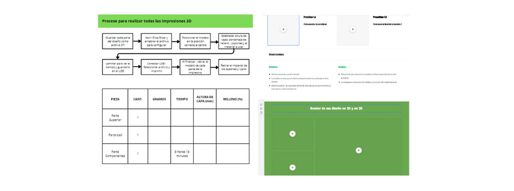

Últimos ajustes
En esta última semana, nos dedicamos a mejorar la estética de la maceta, ya que la impresión dejó algunas imperfecciones que necesitaban ser corregidas. Pulimos y ajustamos las áreas defectuosas para asegurar que la maceta no solo fuera funcional, sino también visualmente atractiva.
Corrección de imperfecciones: Utilizamos herramientas de lijado y pulido para eliminar cualquier irregularidad en la superficie de la maceta. Esto no solo mejoró su apariencia, sino que también garantizó que los componentes del circuito se pudieran integrar de manera más eficiente.
Integración del circuito: Una vez que la estética de la maceta estuvo a nuestro gusto, procedimos a complementar el circuito dentro de ella. Siguiendo nuestro esquema detallado, instalamos cuidadosamente todos los componentes, asegurándonos de que cada conexión fuera sólida y segura. Probamos el circuito integrado para verificar su funcionamiento correcto y hacer ajustes finales si fuera necesario.
Verificación del funcionamiento conjunto: Finalmente, realizamos una prueba completa del sistema con la maceta y el circuito trabajando juntos. Observamos atentamente el desempeño para identificar y corregir cualquier posible problema, asegurándonos de que el producto final funcionara perfectamente.
Informe. Google Side
Paralelamente, también avanzamos con los últimos detalles para el informe, enfocándonos en el criterio D, que trata sobre las pruebas y la usabilidad de la maceta Tree Alive. Este criterio es esencial, ya que documenta cómo hemos verificado la funcionalidad y practicidad del producto en condiciones reales, asegurando que cumple con las expectativas y necesidades de los usuarios.
Además, dedicamos tiempo a mejorar la página de la maceta en Google Sites. Decidimos estructurar la página con toda la información relevante sobre el proyecto, incluyendo descripciones detalladas de las características y beneficios de la maceta Tree Alive. Para mantener la página organizada y profesional, dejamos la incorporación de las imágenes para el final. Estas imágenes mostrarán la maceta junto con una planta, destacando su funcionamiento y estética en un entorno real.
Link del informe: canva.com